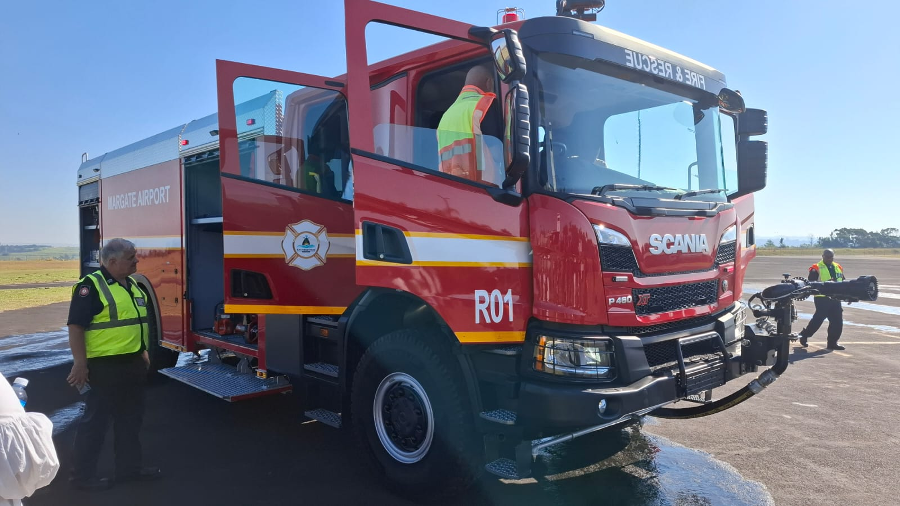

Conclusion & Personal Reflection

Aviation education empowers professionals to drive sector improvements
Key Findings
The research identifies critical challenges facing KZN municipal-owned airports and proposes strategic interventions to enhance their economic contribution. Key recommendations include:
Infrastructure Investment
Structured provincial infrastructure grants for airport upgrades based on demand forecasts
Strategic Planning
Development of a provincial Master Plan for municipal airports with integrated economic development planning
Capacity Building
Strategic investments in technology and human capital development to address skills gaps
Strategic Recommendations
- Implement structured provincial infrastructure grants for targeted airport upgrades
- Develop a comprehensive provincial Master Plan specifically for municipal airports
- Foster integrated economic development planning at district and provincial levels
- Establish public-private partnerships to leverage additional funding and expertise
- Create specialized training programs to address aviation skills shortages
Personal Reflection
The BCom Aviation Management qualification has significantly enriched my academic, professional, and personal development. It has provided:
- A holistic understanding of aviation as a business
- Knowledge of the regulatory environment
- Enhanced leadership ability, analytical competence, and strategic thinking
This learning experience has empowered me to contribute more effectively to the aviation sector, advocate for evidence-based improvements, and support the strategic positioning of municipal airports as catalysts for regional economic development.